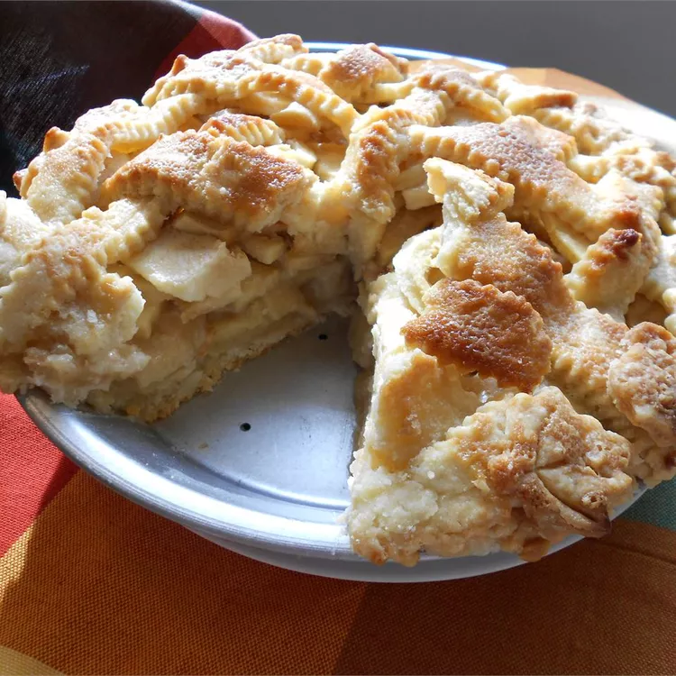

Return to homepage
Apple Pie

Homemade apple pie is always a good idea —
and if you're looking for the best apple pie recipe of all time,
you've come to the right place.
Apple Pie Ingredients
These are the simple ingredients to make this top-rated apple pie recipe:
- Apples: This recipe calls for eight small Granny Smith apples.
- Butter and flour: The filling starts with butter and all-purpose flour cooked into a paste.
- Sugars: A blend of white and brown sugar creates the perfect sweet flavor with a hint of warmth.
- Pie crust: Use a store-bought double crust pie pastry or make your own at home.
How to Make an Apple Pie
Here's a very brief overview of what you can expect
when you make this old-fashioned apple pie at home:
Make the filling:
- On the stove, make a paste with flour and butter.
- Add the sugar and water and bring to a boil.
- Simmer, then remove from heat.
Assemble the pie:
- Press one crust into a pie plate
- Place the sliced apples on the bottom crust
- Use the top crust to make a lattice crust according to the recipe below
- Pour the butter-sugar mixture over the lattice crust
Bake the pie:
- Bake the pie in a preheated oven until the apples are soft and the crust is golden brown.
How Long to Bake Apple Pie
You'll bake the pie at 425 degrees F for 15 minutes, then you'll reduce the temperature
to 350 degrees F and continue baking for 35-45 minutes.
All in all, the pie will bake for
about one hour, give or take a few minutes. You'll know the pie is done when the apples
are soft and the crust is
a beautiful golden brown color.